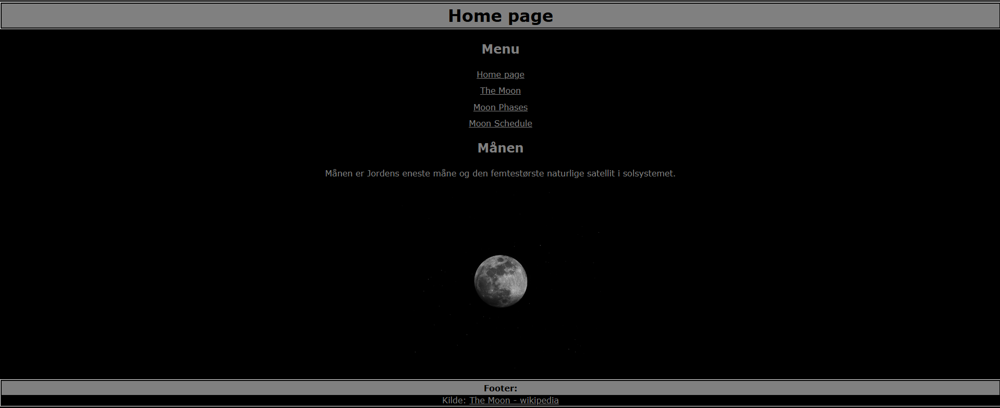
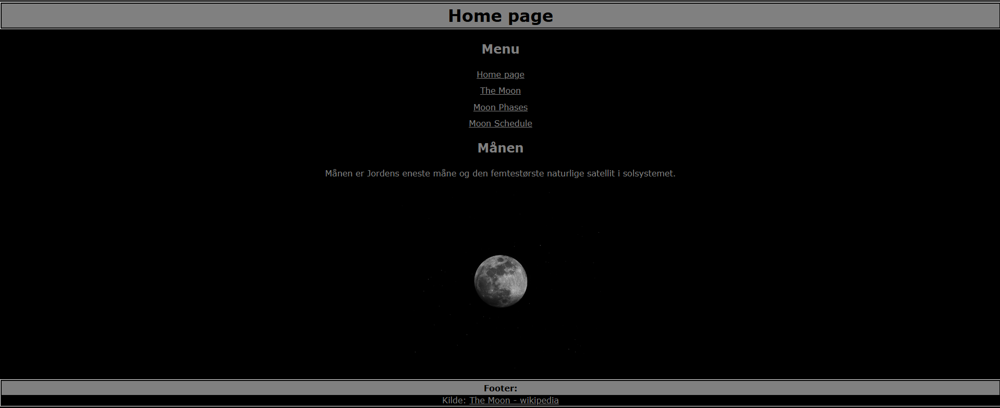
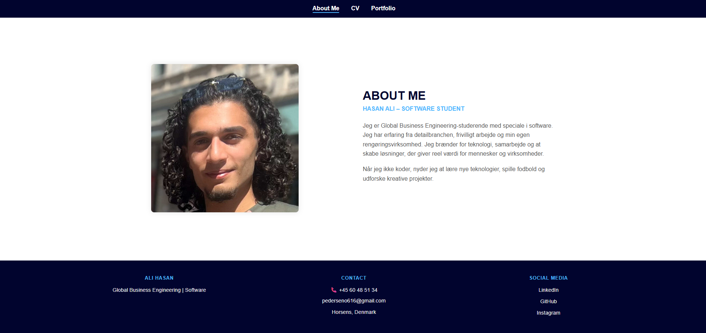
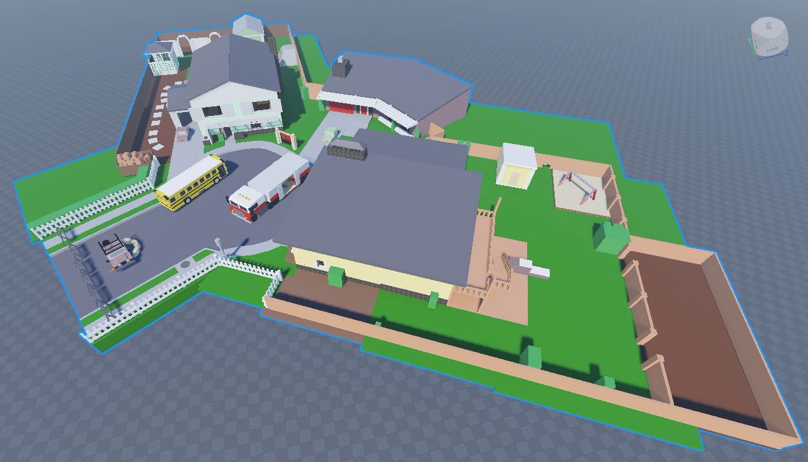
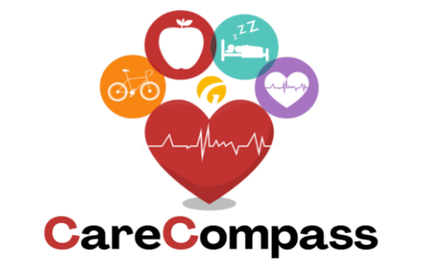
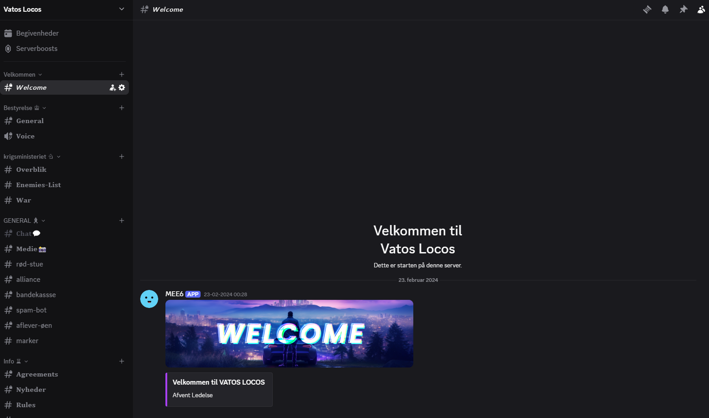

Moon Information Website
A simple and informative website about the Moon.
Technologies: HTML, CSS
A simple and informative website about the Moon.
Technologies: HTML, CSS
Instead of sending a simple PDF CV, I developed a complete personal website to showcase my background, skills, and projects. This site serves as my interactive digital CV and portfolio.
Technologies: HTML, CSS
I designed and built a custom Roblox game map. The project allowed me to explore basic game design, user interaction, and creative building.
Technologies: Roblox Studie
A software application developed in Java for the elder care sector. The app was designed to help organize daily routines, improve communication, and support staff in managing tasks.
Technologies: Java, GUI
I created and manage a Discord server for players in the FiveM gaming community. The server focuses on creating a positive space for communication, teamwork, and social gaming.
Technologies: Discord Setup, Community Management
